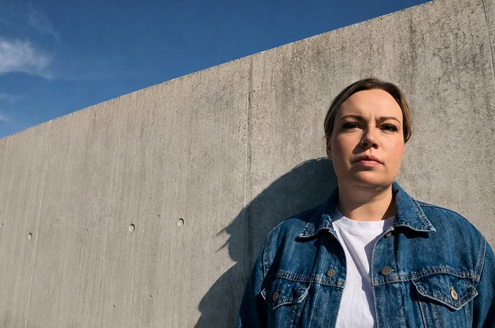
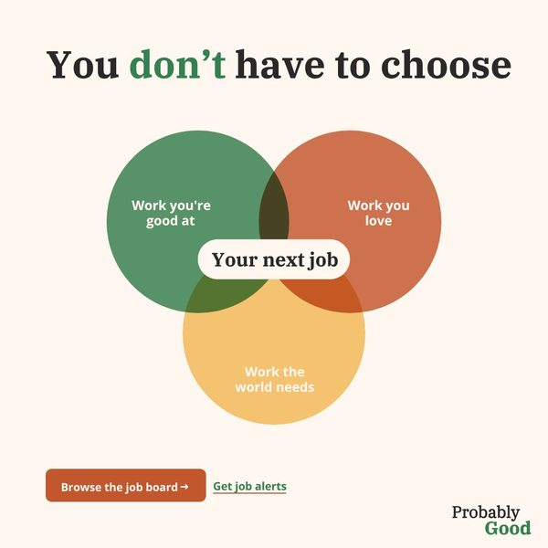
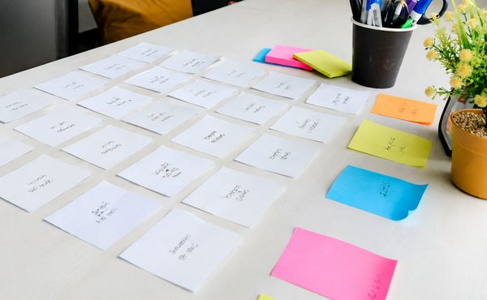
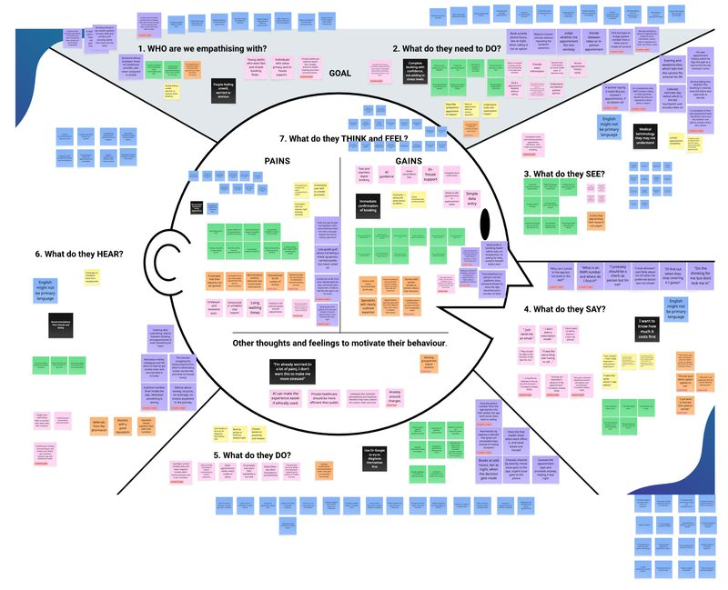
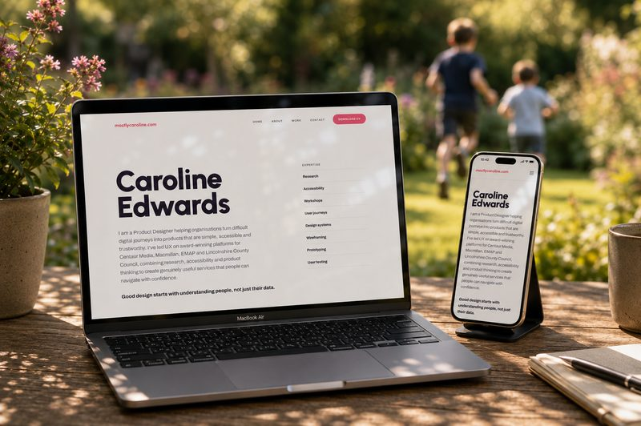
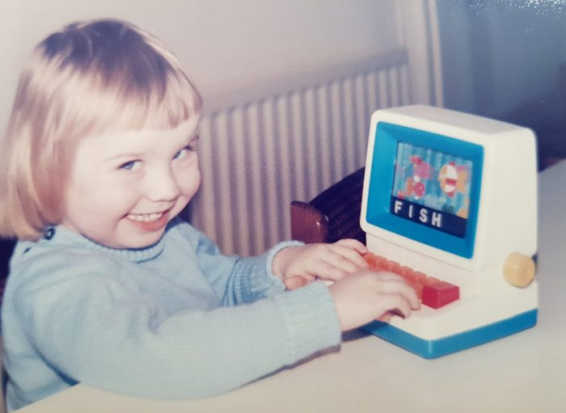
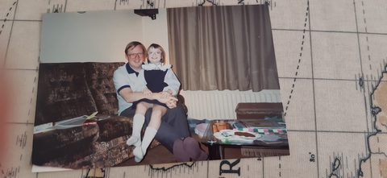
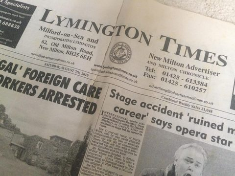
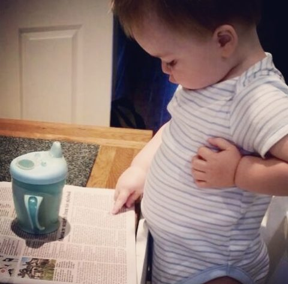

Exclusive interview
Caroline Edwards wants to solve the right problem.
A product designer who starts with questions, evidence and people — then turns what she learns into products worth using.

Research over assumptions.
Why good research changes everything.
Prototype. Test. Learn. Repeat.
Why the messy middle is where products actually improve.
Analysis
AI isn't a product strategy.
The interesting question isn't where can we add AI? It's what becomes possible now that it exists.
Comment
Is the Double Diamond dead?
Product doesn't happen in neat diamonds. The principles evolve with the problem.
The Brief
What does The Times need from its next Product Designer?
A designer who can find the problem, make something, test it and bring people with them.
Problem
The bigger picture
News isn't just a content problem. It's a product problem.
The Times has extraordinary journalism, recognisable brands and millions of people listening, reading and watching.
But the way people discover, consume and interact with content is changing.
That's the interesting bit.
How do you turn great content into digital experiences people actively choose, return to and build into their lives?
That's the problem I'd like to help solve.
Advertisement

Discover
It starts with the problem.
Before the screens, there's a question.
Who are we designing for? What do we actually know? What's the business trying to achieve? And what happens if we're wrong?
I use research, synthesis, prototyping and testing to turn uncertainty into something we can act on.
Define
Good research should change your mind.
If your usability testing doesn't change anything, why did you run it? The point was never the report.

The Brief
What are The Times looking for?
01 — Customer
Challenge assumptions. Find out what people actually need.
02 — Evidence
Use research and data to turn insight into better decisions.
03 — Making
Turn ideas into prototypes. Test them. Learn. Make them better.
04 — Influence
Bring product, technology, business and stakeholders with you.
Start with the problem.
Not the solution.
We don't need more features. We need fewer, better ones.
Find the right problem. Make something. Test it. Learn. Improve it.
Make · Test
Investigation
Less friction for parents, less admin for schools
Finding the problem behind the problem.
Read case study

Case study
Making healthcare booking feel human
Research → synthesis → prioritisation → prototype → test.
Read case study

Experiment
Levelling the playing field
Exploring how technology can make making things more accessible.
Read case study
Learn · Iterate
Reflect
Curious
So, what kind of designer am I?
Evidence-led enough to change my mind.
Hands-on enough to make the idea real.
Collaborative enough to bring people with me.
And stubborn enough to keep asking whether we're solving the right problem.

Understanding people, not just their data.
It's the thread running through everything I do...
Curious about people. Curious about technology. Always looking for the space between the two.
A family tradition
First, Dad had to read the paper.
We couldn't talk to Dad until he'd read it front to back.

The paper anniversary
Then, I made the paper.
Mum saved our wedding announcement as our first paper anniversary gift.

The morning edition
Now, the news comes with milk.
Jasper gives us his morning news briefing over breakfast. Same ritual. Different generation.

Advertisement
Caroline Edwards
If I joined The Times tomorrow...
These are the questions I'd start asking.
01
How might we make brilliant content easier to discover?
02
How might we help someone understand a story without diluting the journalism?
03
How might personalisation broaden someone's world rather than narrow it?
04
What could AI unlock that wasn't previously possible?
05
How might we make younger audiences feel that trusted journalism is for them too?